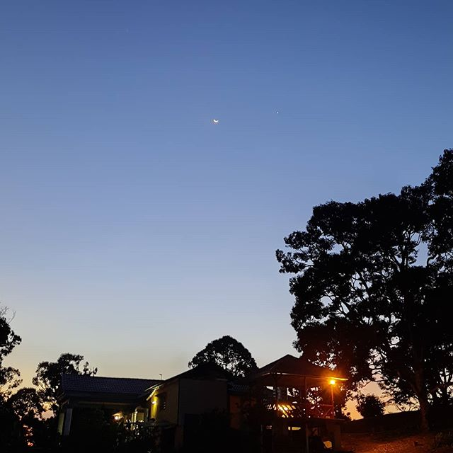
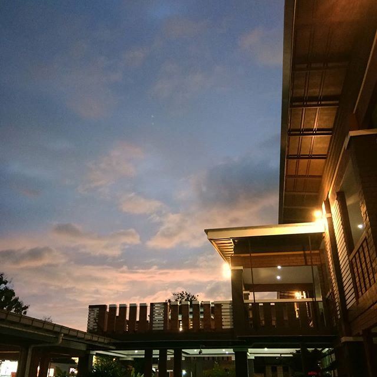
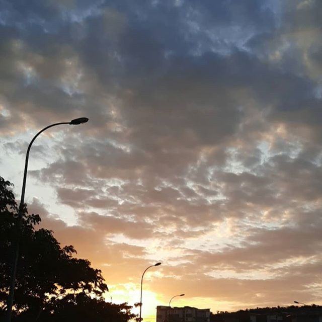

TO MY PHOTOGRAPHY.
This pictures are originally taken by Kasih Azahar.
THE SOME REASON BEHIND PHOTOGRAPHY...
THE SOME REASON BEHIND PHOTOGRAPHY. IT IS ALL ABOUT SKIES. IT'S LIKE A SIGHT PLACE FOR ME TO ESCAPE OR FIND THE REAL REASONS BEHIND ALL WHAT HAPPEN. THE REASON WHY I LIKE TO TAKE PICTURE EVEN I AM NOT A PROFESSIONAL ONE IT IS BECAUSE I CAN KEEP IT AS A MEMORIES BECAUSE THERE IS NOTHING THAT CAN NOT BE CHANGE, SO BY DOING THIS I CAN SEE THE THINGS THAT ARE ALREADY CHANGE. NEXT, IT IS ACTUALLY I AM HAVING FUN WITH IT. IT HELPS ME BE MORE APPRECIATED WHAT IS AROUND US AND WHY WE HAVE TO TAKE SOME PICTURES IS BECAUSE WE WANT IT TO BE OUR GOOD OLD MEMORIES THAT WE SPEND THAT DAY. ANOTHER REASON IS, SOMETIME THE PICTURE ITSELF CAN EXPLAIN TO THE VIEWERS ABOUT THE SITUATION.
THIS PICTURE WAS TAKEN AT LANGKAWI ISLAND

THIS PICTURE WAS TAKEN AT MY RENTAL HOUSE AT REMBAU

SUNSET ON MY HOMESTAY AT LANGKAWI

EARLY IN THE MORNING AT UiTM REMBAU. MISS IT :)